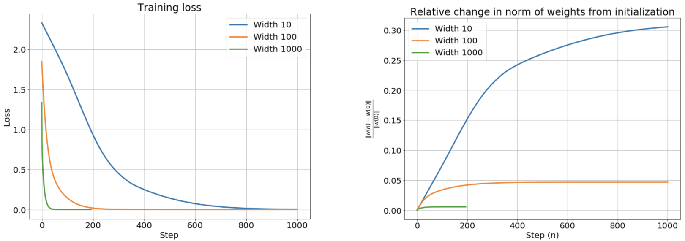

NTK Proof
f ( x , θ ) = σ ( w x + b ) w , b ∈ θ
f(x, \theta) = \sigma(wx + b) \quad w, b \in \theta
f ( x , θ ) = σ ( w x + b ) w , b ∈ θ
L ( f , x , y , θ ) = ( f ( x , θ ) − y ) 2
L(f, x, y, \theta) = (f(x, \theta) - y)^2
L ( f , x , y , θ ) = ( f ( x , θ ) − y ) 2
θ t + 1 = θ t + η ∇ w L ( f , x , y , θ )
\theta_{t+1} = \theta_t + \eta \nabla_{w} L(f, x, y, \theta)
θ t + 1 = θ t + η ∇ w L ( f , x , y , θ )
Denote θ t \theta_t θ t θ ( t ) \theta(t) θ ( t )
d θ ( t ) d t = ∇ θ L ( f , x , y , θ )
\frac{d\theta(t)}{dt} = \nabla_{\theta} L(f, x, y, \theta)
d t d θ ( t ) = ∇ θ L ( f , x , y , θ )
= 2 ( f ( x , θ ) − y ) ∇ θ f ( x , θ )
= 2(f(x, \theta) - y) \nabla_{\theta} f(x,\theta)
= 2 ( f ( x , θ ) − y ) ∇ θ f ( x , θ )
= 2 ( f ( x , θ ) − y ) ∇ θ ( f ( x , θ 0 ) + ∇ θ f ( x , θ 0 ) ⊤ ( θ − θ 0 ) )
= 2(f(x, \theta) - y) \nabla_{\theta} (f(x,\theta_0) + \nabla_{\theta} f(x,\theta_0)^{\top}(\theta - \theta_0))
= 2 ( f ( x , θ ) − y ) ∇ θ ( f ( x , θ 0 ) + ∇ θ f ( x , θ 0 ) ⊤ ( θ − θ 0 ) )
= 2 ( f ( x , θ ) − y ) ∇ θ ( f ( x , θ 0 ) + ∇ θ f ( x , θ 0 ) ⊤ θ − ∇ θ f ( x , θ 0 ) ⊤ θ 0 )
= 2(f(x, \theta) - y) \nabla_{\theta} (f(x,\theta_0) + \nabla_{\theta} f(x,\theta_0)^{\top}\theta - \nabla_{\theta} f(x,\theta_0)^{\top}\theta_0)
= 2 ( f ( x , θ ) − y ) ∇ θ ( f ( x , θ 0 ) + ∇ θ f ( x , θ 0 ) ⊤ θ − ∇ θ f ( x , θ 0 ) ⊤ θ 0 )
= 2 ( f ( x , θ ) − y ) ∇ θ f ( x , θ 0 )
= 2(f(x, \theta) - y) \nabla_{\theta} f(x,\theta_0)
= 2 ( f ( x , θ ) − y ) ∇ θ f ( x , θ 0 )
Abstract
To understand what is the neural tangent kernel(NTK), there are 3 important result that need to remember.
When the width of the neural network goes to infinity, the network will be equivalent to a Gaussian process.
When the width of the neural network goes to infinity, the weight of the network will remain almost unchanged during training. That is, the neural network will become a linear model.
Since the network will become a linear model, the loss surface of the MSE of the infinite-width network will be a convex. As a result, we can optimize the infinite-width network just like optimizing a linear regression and solve it by ODE.
Combine these 3 points, NTK is a kernel that can kernelize the neural network architecture and it provides a closed-form solution of the kernel for anytime. Thus, We can compute the NTK at the end of training without actual training and compute the posterior and the prediction of the testing data with Bayesian inference.
Infinite-Width Neural Network As Gaussian Process
Define A Neural Network
First, given a training dataset D \mathcal{D} D N = ∣ D ∣ N = |\mathcal{D}| N = ∣ D ∣ d i = ( x , y ) ∈ D ∀ i d_i = (x, y) \in \mathcal{D} \ \forall i d i = ( x , y ) ∈ D ∀ i x ∈ R k × 1 x \in \mathbb{R}^{k \times 1} x ∈ R k × 1 y ∈ R y \in \mathbb{R} y ∈ R X = { x : ( x , y ) ∈ D } \mathcal{X} = \{x: (x, y) \in \mathcal{D}\} X = { x : ( x , y ) ∈ D } Y = { y : ( x , y ) ∈ D } \mathcal{Y} = \{ y: (x, y) \in \mathcal{D}\} Y = { y : ( x , y ) ∈ D }
We represent the element of the neural network f ( x , θ ) , x ∈ X f(x, \theta), \ x \in \mathcal{X} f ( x , θ ) , x ∈ X
h 1 = W 1 x + b 1 h l + 1 = W l + 1 a l + b l + 1 = W l + 1 ϕ ( h l ) + b l + 1 y ^ = f ( x , θ ) = h L
h^{1} = W^{1} x + b^{1}
\newline
h^{l+1} = W^{l+1} a^l + b^{l+1} = W^{l+1} \phi(h^l) + b^{l+1}
\newline
\hat{y} = f(x, \theta) = h^{L}
h 1 = W 1 x + b 1 h l + 1 = W l + 1 a l + b l + 1 = W l + 1 ϕ ( h l ) + b l + 1 y ^ = f ( x , θ ) = h L
where ϕ \phi ϕ h l + 1 ∈ R n l + 1 × 1 h^{l+1} \in \mathbb{R}^{n_{l+1} \times 1} h l + 1 ∈ R n l + 1 × 1 a l + 1 ∈ R n l + 1 × 1 a^{l+1} \in \mathbb{R}^{n_{l+1} \times 1} a l + 1 ∈ R n l + 1 × 1 θ \theta θ W l , b l ∈ θ ∀ l W^{l}, b^{l} \in \theta \ \forall l W l , b l ∈ θ ∀ l W l + 1 ∈ R n l + 1 × n l W^{l+1} \in \mathbb{R}^{n_{l+1} \times n_{l}} W l + 1 ∈ R n l + 1 × n l b l + 1 ∈ R n l + 1 × 1 b^{l+1} \in \mathbb{R}^{n_{l+1} \times 1} b l + 1 ∈ R n l + 1 × 1 n l + 1 n_{l+1} n l + 1 l + 1 l+1 l + 1 n 0 = k n_0 = k n 0 = k y ^ ∈ R \hat{y} \in \mathbb{R} y ^ ∈ R x x x Y ^ = f ( X , θ ) ∈ R N \hat{\mathcal{Y}} = f(\mathcal{X}, \theta) \in \mathbb{R}^{N} Y ^ = f ( X , θ ) ∈ R N
W i , j l + 1 = σ w n l + 1 w i , j l + 1 , b i l + 1 = σ b β i l + 1 w i , j l + 1 , β i l + 1 ∼ i . i . d N ( 0 , 1 ) ∀ l , i , j 1 ≤ l ≤ L , 1 ≤ i ≤ n l + 1 , 1 ≤ j ≤ n l
W_{i,j}^{l+1} = \frac{\sigma_w}{\sqrt{n_{l+1}}} w_{i,j}^{l+1}, \quad b_{i}^{l+1} = \sigma_b \beta_{i}^{l+1}
\newline
w_{i,j}^{l+1}, \beta_{i}^{l+1} \overset{i.i.d}{\sim} \mathcal{N}(0, 1)
\newline
\forall l, i, j \quad 1 \leq l \leq L, \quad 1 \leq i \leq n_{l+1}, \quad 1 \leq j \leq n_{l}
W i , j l + 1 = n l + 1 σ w w i , j l + 1 , b i l + 1 = σ b β i l + 1 w i , j l + 1 , β i l + 1 ∼ i . i . d N ( 0 , 1 ) ∀ l , i , j 1 ≤ l ≤ L , 1 ≤ i ≤ n l + 1 , 1 ≤ j ≤ n l
where W i , j l + 1 ∈ R W_{i,j}^{l+1} \in \mathbb{R} W i , j l + 1 ∈ R l + 1 l+1 l + 1 b i l ∈ R b_{i}^{l} \in \mathbb{R} b i l ∈ R
Combine them.
h i l + 1 = W i l + 1 a l + b i l + 1 = ∑ j = 1 n l + 1 W i , j l + 1 a j l + b i l + 1 = σ w n l + 1 ∑ j = 1 n l + 1 w i , j l + 1 ϕ ( h j l ) + σ b β i l + 1
h_{i}^{l+1}
= W_{i}^{l+1} a^{l} + b_{i}^{l+1}
\newline
= \sum_{j=1}^{n_{l+1}} W_{i, j}^{l+1} a_{j}^{l} + b_{i}^{l+1}
\newline
= \frac{\sigma_w}{\sqrt{n_{l+1}}} \sum_{j=1}^{n_{l+1}} w_{i, j}^{l+1} \phi(h_{j}^{l}) + \sigma_b \beta_{i}^{l+1}
h i l + 1 = W i l + 1 a l + b i l + 1 = j = 1 ∑ n l + 1 W i , j l + 1 a j l + b i l + 1 = n l + 1 σ w j = 1 ∑ n l + 1 w i , j l + 1 ϕ ( h j l ) + σ b β i l + 1
where W i l + 1 ∈ R 1 × n l W_{i}^{l+1} \in \mathbb{R}^{1 \times n_{l}} W i l + 1 ∈ R 1 × n l W l + 1 W^{l+1} W l + 1 a l ∈ R n l × 1 a^{l} \in \mathbb{R}^{n_{l} \times 1} a l ∈ R n l × 1 a j l ∈ R a_{j}^l \in \mathbb{R} a j l ∈ R
Let θ l + 1 \theta^{l+1} θ l + 1 l + 1 l+1 l + 1
θ l + 1 = v e c ( W l + 1 , b l + 1 ) ∈ R n l + 1 × ( n l + 1 ) θ = v e c ( ∪ l = 1 L θ l ) ∈ R S × 1
\theta^{l + 1} = vec({W^{l+1}, b^{l+1}}) \in \mathbb{R}^{n_{l+1} \times (n_{l} + 1)}
\newline
\theta = vec(\cup_{l=1}^{L} \theta^l) \in \mathbb{R}^{S \times 1}
θ l + 1 = v e c ( W l + 1 , b l + 1 ) ∈ R n l + 1 × ( n l + 1 ) θ = v e c ( ∪ l = 1 L θ l ) ∈ R S × 1
where S = ∑ l = 1 L n l ( n l − 1 + 1 ) S =\sum_{l=1}^{L} n_{l}(n_{l-1} + 1) S = ∑ l = 1 L n l ( n l − 1 + 1 )
We also denote the empirical loss of all training dataset as L ( X , Y ) \mathcal{L}(\mathcal{X}, \mathcal{Y}) L ( X , Y ) l ( y ^ , y ) l(\hat{y}, y) l ( y ^ , y )
l ( y ^ , y ) = l ( f ( x , θ ) , y )
l(\hat{y}, y) = l(f(x, \theta), y)
l ( y ^ , y ) = l ( f ( x , θ ) , y )
L f ( ⋅ , ) ( X , Y ) = ∑ x ∈ X , y ∈ Y l ( f ( x , θ ) , y ) ∈ R
\mathcal{L}_{f(\cdot, )}(\mathcal{X}, \mathcal{Y}) = \sum_{x \in \mathcal{X}, \ y \in \mathcal{Y}} l(f(x, \theta), y) \in \mathbb{R}
L f ( ⋅ , ) ( X , Y ) = x ∈ X , y ∈ Y ∑ l ( f ( x , θ ) , y ) ∈ R
The Mean Of The Layers
E [ h i l ( x ) ] = E [ σ w n 1 ∑ j = 1 n 1 w i , j 1 a j l − 1 + σ b β i 1 ]
E[h_{i}^{l}(x)] = E[\frac{\sigma_w}{\sqrt{n_{1}}} \sum_{j=1}^{n_{1}} w_{i, j}^{1} a_{j}^{l-1} + \sigma_b \beta_{i}^{1}]
E [ h i l ( x ) ] = E [ n 1 σ w j = 1 ∑ n 1 w i , j 1 a j l − 1 + σ b β i 1 ]
= σ w n 1 ∑ j = 1 n 1 E [ w i , j 1 ] a j l − 1 + σ b E [ β i 1 ] = 0
= \frac{\sigma_w}{\sqrt{n_{1}}} \sum_{j=1}^{n_{1}} E[w_{i, j}^{1}] a_{j}^{l-1} + \sigma_b E[\beta_{i}^{1}] = 0
= n 1 σ w j = 1 ∑ n 1 E [ w i , j 1 ] a j l − 1 + σ b E [ β i 1 ] = 0
The Covariance Of The First Layer
Consider the same entries.
k 1 ( x , x ′ ) = C o v [ h i 1 ( x ) , h i 1 ( x ′ ) ]
k^{1}(x, x') = Cov[h_{i}^{1}(x), h_{i}^{1}(x')]
k 1 ( x , x ′ ) = C o v [ h i 1 ( x ) , h i 1 ( x ′ ) ]
= E [ ( h i 1 ( x ) − E [ h i 1 ( x ) ] ) ( h i 1 ( x ′ ) − E [ h i 1 ( x ′ ) ] ) ]
= E[(h_{i}^{1}(x) - E[h_{i}^{1}(x)]) (h_{i}^{1}(x') - E[h_{i}^{1}(x')])]
= E [ ( h i 1 ( x ) − E [ h i 1 ( x ) ] ) ( h i 1 ( x ′ ) − E [ h i 1 ( x ′ ) ] ) ]
= E [ h i 1 ( x ) h i 1 ( x ′ ) ] − E [ h i 1 ( x ) ] E [ h i 1 ( x ′ ) ]
= E[h_{i}^{1}(x) h_{i}^{1}(x')] - E[h_{i}^{1}(x)] E[h_{i}^{1}(x')]
= E [ h i 1 ( x ) h i 1 ( x ′ ) ] − E [ h i 1 ( x ) ] E [ h i 1 ( x ′ ) ]
= E [ ( σ w n 1 ∑ j = 1 n 1 w i , j 1 x j + σ b β i 1 ) ( σ w n 1 ∑ j = 1 n 1 w i , j 1 x j ′ + σ b β i 1 ) ]
= E[(\frac{\sigma_w}{\sqrt{n_{1}}} \sum_{j=1}^{n_{1}} w_{i, j}^{1} x_{j} + \sigma_b \beta_{i}^{1}) (\frac{\sigma_w}{\sqrt{n_{1}}} \sum_{j=1}^{n_{1}} w_{i, j}^{1} x_{j}' + \sigma_b \beta_{i}^{1})]
= E [ ( n 1 σ w j = 1 ∑ n 1 w i , j 1 x j + σ b β i 1 ) ( n 1 σ w j = 1 ∑ n 1 w i , j 1 x j ′ + σ b β i 1 ) ]
= E [ σ w 2 n 1 ( ∑ j = 1 n 1 w i , j 1 x j ) ( ∑ k = 1 n 1 w i , k 1 x k ′ ) ) + ( σ b β i 1 ) ( σ b β i 1 ) + σ w n 1 ( σ b β i 1 ∑ j = 1 n 1 w i , j 1 x j ) + σ w n 1 ( σ b β i 1 ∑ j = 1 n 1 w i , j 1 x j ′ ) ]
= E[\frac{\sigma_w^2}{n_{1}} (\sum_{j=1}^{n_{1}} w_{i, j}^{1} x_{j}) (\sum_{k=1}^{n_{1}} w_{i, k}^{1} x_{k}'))
+ (\sigma_b \beta_{i}^{1}) (\sigma_b \beta_{i}^{1})
+ \frac{\sigma_w}{\sqrt{n_{1}}} (\sigma_b \beta_{i}^{1} \sum_{j=1}^{n_{1}} w_{i, j}^{1} x_{j})
+ \frac{\sigma_w}{\sqrt{n_{1}}} (\sigma_b \beta_{i}^{1} \sum_{j=1}^{n_{1}} w_{i, j}^{1} x_{j}')]
= E [ n 1 σ w 2 ( j = 1 ∑ n 1 w i , j 1 x j ) ( k = 1 ∑ n 1 w i , k 1 x k ′ ) ) + ( σ b β i 1 ) ( σ b β i 1 ) + n 1 σ w ( σ b β i 1 j = 1 ∑ n 1 w i , j 1 x j ) + n 1 σ w ( σ b β i 1 j = 1 ∑ n 1 w i , j 1 x j ′ ) ]
= σ w 2 n 1 ( E [ ∑ j = k n 1 w i , j 1 x j w i , k 1 x k ′ ] + E [ ∑ j ≠ k n 1 w i , j 1 x j w i , k 1 x k ′ ] ) + σ b 2 E [ ( β i 1 ) 2 ] + σ w σ b n 1 ( E [ β i 1 ] E [ ∑ j = 1 n 1 w i , j 1 x j ] ) + σ w σ b n 1 ( E [ β i 1 ] E [ ∑ j = 1 n 1 w i , j 1 x j ′ ] )
= \frac{\sigma_w^2}{n_{1}} (E[\sum_{j=k}^{n_{1}} w_{i, j}^{1} x_{j} w_{i, k}^{1} x_{k}'] + E[\sum_{j \neq k}^{n_{1}} w_{i, j}^{1} x_{j} w_{i, k}^{1} x_{k}'])
+ \sigma_b^2 E[(\beta_{i}^{1})^2]
+ \frac{\sigma_w \sigma_b}{\sqrt{n_{1}}} ( E[\beta_{i}^{1}] E[\sum_{j=1}^{n_{1}} w_{i, j}^{1} x_{j}])
+ \frac{\sigma_w \sigma_b}{\sqrt{n_{1}}} ( E[\beta_{i}^{1}] E[\sum_{j=1}^{n_{1}} w_{i, j}^{1} x_{j}'])
= n 1 σ w 2 ( E [ j = k ∑ n 1 w i , j 1 x j w i , k 1 x k ′ ] + E [ j = k ∑ n 1 w i , j 1 x j w i , k 1 x k ′ ] ) + σ b 2 E [ ( β i 1 ) 2 ] + n 1 σ w σ b ( E [ β i 1 ] E [ j = 1 ∑ n 1 w i , j 1 x j ] ) + n 1 σ w σ b ( E [ β i 1 ] E [ j = 1 ∑ n 1 w i , j 1 x j ′ ] )
Since E [ β i 1 ] = E [ w i , j l ] = 0 E[\beta_{i}^{1}] = E[w_{i, j}^{l}] = 0 E [ β i 1 ] = E [ w i , j l ] = 0
= σ w 2 n 1 ( ∑ j = k n 1 E [ w i , j 1 w i , k 1 ] x j x k ′ + ∑ j ≠ k n 1 E [ w i , j 1 w i , k 1 ] x j x k ′ ) + σ b 2 ( V a r [ β i 1 ] + E [ β i 1 ] 2 )
= \frac{\sigma_w^2}{n_{1}} (\sum_{j=k}^{n_{1}} E[w_{i, j}^{1} w_{i, k}^{1}] x_{j} x_{k}' + \sum_{j \neq k}^{n_{1}} E[w_{i, j}^{1} w_{i, k}^{1}] x_{j} x_{k}')
+ \sigma_b^2 (Var[\beta_{i}^{1}] + E[\beta_{i}^{1}]^{2})
= n 1 σ w 2 ( j = k ∑ n 1 E [ w i , j 1 w i , k 1 ] x j x k ′ + j = k ∑ n 1 E [ w i , j 1 w i , k 1 ] x j x k ′ ) + σ b 2 ( V a r [ β i 1 ] + E [ β i 1 ] 2 )
Since w i , j 1 , w i , k 1 ∼ i . i . d N ( 0 , 1 ) w_{i, j}^{1}, w_{i, k}^{1} \overset{i.i.d}{\sim} \mathcal{N}(0, 1) w i , j 1 , w i , k 1 ∼ i . i . d N ( 0 , 1 ) E [ w i , j 1 w i , k 1 ] = E [ w i , j 1 ] E [ w i , k 1 ] = 0 E[w_{i, j}^{1} w_{i, k}^{1}] = E[w_{i, j}^{1}] E[w_{i, k}^{1}] = 0 E [ w i , j 1 w i , k 1 ] = E [ w i , j 1 ] E [ w i , k 1 ] = 0 V a r [ β i 1 ] = 1 Var[\beta_{i}^{1}] = 1 V a r [ β i 1 ] = 1
= σ w 2 n 1 ( ∑ j = 1 n 1 ( V a r [ w i , j 1 ] + E [ w i , j 1 ] 2 ) x j x k ′ ) + σ b 2
= \frac{\sigma_w^2}{n_{1}} (\sum_{j=1}^{n_{1}} (Var[w_{i, j}^{1}] + E[w_{i, j}^{1}]^{2}) x_{j} x_{k}')
+ \sigma_b^2
= n 1 σ w 2 ( j = 1 ∑ n 1 ( V a r [ w i , j 1 ] + E [ w i , j 1 ] 2 ) x j x k ′ ) + σ b 2
= σ w 2 n 1 ( ∑ j = 1 n 1 x j x k ′ ) + σ b 2
= \frac{\sigma_w^2}{n_{1}} (\sum_{j=1}^{n_{1}} x_{j} x_{k}')
+ \sigma_b^2
= n 1 σ w 2 ( j = 1 ∑ n 1 x j x k ′ ) + σ b 2
= σ w 2 n 1 x ⊤ x ′ + σ b 2
= \frac{\sigma_w^2}{n_{1}} x^{\top} x'
+ \sigma_b^2
= n 1 σ w 2 x ⊤ x ′ + σ b 2
Consider the different entries.
k i ≠ j 1 ( x , x ′ ) = C o v [ h i 1 ( x ) , h j 1 ( x ′ ) ] , i ≠ j
k_{i \neq j}^{1}(x, x') = Cov[h_{i}^{1}(x), h_{j}^{1}(x')], \ i \neq j
k i = j 1 ( x , x ′ ) = C o v [ h i 1 ( x ) , h j 1 ( x ′ ) ] , i = j
= E [ ( σ w n 1 ∑ k = 1 n 1 w i , k 1 x k + σ b β i 1 ) ( σ w n 1 ∑ k ′ = 1 n 1 w j , k ′ 1 x k ′ ′ + σ b β j 1 ) ]
= E[(\frac{\sigma_w}{\sqrt{n_{1}}} \sum_{k=1}^{n_{1}} w_{i, k}^{1} x_{k} + \sigma_b \beta_{i}^{1}) (\frac{\sigma_w}{\sqrt{n_{1}}} \sum_{k'=1}^{n_{1}} w_{j, k'}^{1} x_{k'}' + \sigma_b \beta_{j}^{1})]
= E [ ( n 1 σ w k = 1 ∑ n 1 w i , k 1 x k + σ b β i 1 ) ( n 1 σ w k ′ = 1 ∑ n 1 w j , k ′ 1 x k ′ ′ + σ b β j 1 ) ]
= σ w 2 n 1 ( E [ ∑ k = 1 n 1 ∑ k ′ = 1 n 1 w i , k 1 x k w j , k ′ 1 x k ′ ′ ] ) + σ b 2 E [ β i 1 β j 1 ] + σ w σ b n 1 ( E [ β i 1 ] E [ ∑ k = 1 n 1 w i , k 1 x k ] ) + σ w σ b n 1 ( E [ β j 1 ] E [ ∑ k ′ = 1 n 1 w j , k ′ 1 x k ′ ′ ] )
= \frac{\sigma_w^2}{n_{1}} (E[\sum_{k=1}^{n_{1}} \sum_{k'=1}^{n_{1}} w_{i, k}^{1} x_{k} w_{j, k'}^{1} x_{k'}'])
+ \sigma_b^2 E[\beta_{i}^{1} \beta_{j}^{1}]
+ \frac{\sigma_w \sigma_b}{\sqrt{n_{1}}} ( E[\beta_{i}^{1}] E[\sum_{k=1}^{n_{1}} w_{i, k}^{1} x_{k}])
+ \frac{\sigma_w \sigma_b}{\sqrt{n_{1}}} ( E[\beta_{j}^{1}] E[\sum_{k'=1}^{n_{1}} w_{j, k'}^{1} x_{k'}'])
= n 1 σ w 2 ( E [ k = 1 ∑ n 1 k ′ = 1 ∑ n 1 w i , k 1 x k w j , k ′ 1 x k ′ ′ ] ) + σ b 2 E [ β i 1 β j 1 ] + n 1 σ w σ b ( E [ β i 1 ] E [ k = 1 ∑ n 1 w i , k 1 x k ] ) + n 1 σ w σ b ( E [ β j 1 ] E [ k ′ = 1 ∑ n 1 w j , k ′ 1 x k ′ ′ ] )
= σ w 2 n 1 ( ∑ k = 1 n 1 ∑ k ′ = 1 n 1 E [ w i , k 1 ] E [ w j , k ′ 1 ] x k x k ′ ′ ] ) = 0
= \frac{\sigma_w^2}{n_{1}} (\sum_{k=1}^{n_{1}} \sum_{k'=1}^{n_{1}} E[w_{i, k}^{1}] E[w_{j, k'}^{1}] x_{k} x_{k'}']) = 0
= n 1 σ w 2 ( k = 1 ∑ n 1 k ′ = 1 ∑ n 1 E [ w i , k 1 ] E [ w j , k ′ 1 ] x k x k ′ ′ ] ) = 0
The Covariance Of The Deeper Layers
Consider the different entries.
k i ≠ j l ( x , x ′ ) = C o v [ h i l ( x ) , h j l ( x ′ ) ] , i ≠ j
k_{i \neq j}^{l}(x, x') = Cov[h_{i}^{l}(x), h_{j}^{l}(x')], \ i \neq j
k i = j l ( x , x ′ ) = C o v [ h i l ( x ) , h j l ( x ′ ) ] , i = j
= E [ ( σ w n l ∑ k = 1 n l w i , k l ϕ ( h k l ( x ) ) + σ b β i l ) ( σ w n l ∑ k ′ = 1 n l w j , k ′ l ϕ ( h k ′ l ( x ′ ) ) + σ b β j l ) ]
= E[(\frac{\sigma_w}{\sqrt{n_{l}}} \sum_{k=1}^{n_{l}} w_{i, k}^{l} \phi(h_{k}^{l}(x)) + \sigma_b \beta_{i}^{l}) (\frac{\sigma_w}{\sqrt{n_{l}}} \sum_{k'=1}^{n_{l}} w_{j, k'}^{l} \phi(h_{k'}^{l}(x')) + \sigma_b \beta_{j}^{l})]
= E [ ( n l σ w k = 1 ∑ n l w i , k l ϕ ( h k l ( x ) ) + σ b β i l ) ( n l σ w k ′ = 1 ∑ n l w j , k ′ l ϕ ( h k ′ l ( x ′ ) ) + σ b β j l ) ]
= σ w 2 n l ( E [ ∑ k = 1 n l ∑ k ′ = 1 n l w i , k l ϕ ( h k l ( x ) ) w j , k ′ l ϕ ( h k ′ l ( x ′ ) ) ] ) + σ b 2 E [ β i l β j l ] + σ w σ b n l ( E [ β i l ] E [ ∑ k = 1 n l w i , k l ϕ ( h k l ( x ) ) ] ) + σ w σ b n l ( E [ β j l ] E [ ∑ k ′ = 1 n l w j , k ′ l ϕ ( h k ′ l ( x ′ ) ) ] )
= \frac{\sigma_w^2}{n_{l}} (E[\sum_{k=1}^{n_{l}} \sum_{k'=1}^{n_{l}} w_{i, k}^{l} \phi(h_{k}^{l}(x)) w_{j, k'}^{l} \phi(h_{k'}^{l}(x'))])
+ \sigma_b^2 E[\beta_{i}^{l} \beta_{j}^{l}]
+ \frac{\sigma_w \sigma_b}{\sqrt{n_{l}}} ( E[\beta_{i}^{l}] E[\sum_{k=1}^{n_{l}} w_{i, k}^{l} \phi(h_{k}^{l}(x))])
+ \frac{\sigma_w \sigma_b}{\sqrt{n_{l}}} ( E[\beta_{j}^{l}] E[\sum_{k'=1}^{n_{l}} w_{j, k'}^{l} \phi(h_{k'}^{l}(x'))])
= n l σ w 2 ( E [ k = 1 ∑ n l k ′ = 1 ∑ n l w i , k l ϕ ( h k l ( x ) ) w j , k ′ l ϕ ( h k ′ l ( x ′ ) ) ] ) + σ b 2 E [ β i l β j l ] + n l σ w σ b ( E [ β i l ] E [ k = 1 ∑ n l w i , k l ϕ ( h k l ( x ) ) ] ) + n l σ w σ b ( E [ β j l ] E [ k ′ = 1 ∑ n l w j , k ′ l ϕ ( h k ′ l ( x ′ ) ) ] )
= σ w 2 n l ( ∑ k = 1 n l ∑ k ′ = 1 n l E [ w i , k l ] E [ w j , k ′ l ] ϕ ( h k l ( x ) ) ϕ ( h k ′ l ( x ′ ) ) ] ) = 0
= \frac{\sigma_w^2}{n_{l}} (\sum_{k=1}^{n_{l}} \sum_{k'=1}^{n_{l}} E[w_{i, k}^{l}] E[w_{j, k'}^{l}] \phi(h_{k}^{l}(x)) \phi(h_{k'}^{l}(x'))]) = 0
= n l σ w 2 ( k = 1 ∑ n l k ′ = 1 ∑ n l E [ w i , k l ] E [ w j , k ′ l ] ϕ ( h k l ( x ) ) ϕ ( h k ′ l ( x ′ ) ) ] ) = 0
We've got the covariance of different entries k i ≠ j l ( x , x ′ ) k_{i \neq j}^{l}(x, x') k i = j l ( x , x ′ ) x x x x ′ x' x ′
Consider the same entries.
k l ( x , x ′ ) = C o v [ h i l ( x ) , h i l ( x ′ ) ]
k^{l}(x, x') = Cov[h_{i}^{l}(x), h_{i}^{l}(x')]
k l ( x , x ′ ) = C o v [ h i l ( x ) , h i l ( x ′ ) ]
= E [ ( h i l ( x ) − E [ h i l ( x ) ] ) ( h i l ( x ′ ) − E [ h i l ( x ′ ) ] ) ]
= E[(h_{i}^{l}(x) - E[h_{i}^{l}(x)]) (h_{i}^{l}(x') - E[h_{i}^{l}(x')])]
= E [ ( h i l ( x ) − E [ h i l ( x ) ] ) ( h i l ( x ′ ) − E [ h i l ( x ′ ) ] ) ]
= E [ h i l ( x ) h i l ( x ′ ) ] − E [ h i l ( x ) ] E [ h i l ( x ′ ) ]
= E[h_{i}^{l}(x) h_{i}^{l}(x')] - E[h_{i}^{l}(x)] E[h_{i}^{l}(x')]
= E [ h i l ( x ) h i l ( x ′ ) ] − E [ h i l ( x ) ] E [ h i l ( x ′ ) ]
= E [ ( σ w n 1 ∑ j = 1 n 1 w i , j 1 ϕ ( h j l − 1 ( x ) ) + σ b β i 1 ) ( σ w n 1 ∑ j = 1 n 1 w i , j 1 ϕ ( h j l − 1 ( x ′ ) ) + σ b β i 1 ) ]
= E[(\frac{\sigma_w}{\sqrt{n_{1}}} \sum_{j=1}^{n_{1}} w_{i, j}^{1} \phi(h_{j}^{l-1}(x)) + \sigma_b \beta_{i}^{1}) (\frac{\sigma_w}{\sqrt{n_{1}}} \sum_{j=1}^{n_{1}} w_{i, j}^{1} \phi(h_{j}^{l-1}(x')) + \sigma_b \beta_{i}^{1})]
= E [ ( n 1 σ w j = 1 ∑ n 1 w i , j 1 ϕ ( h j l − 1 ( x ) ) + σ b β i 1 ) ( n 1 σ w j = 1 ∑ n 1 w i , j 1 ϕ ( h j l − 1 ( x ′ ) ) + σ b β i 1 ) ]
= σ w 2 n l ( E [ ∑ j = k n l w i , j l ϕ ( h j l − 1 ( x ) ) w i , k l ϕ ( h j l − 1 ( x ′ ) ) ] + E [ ∑ j ≠ k n l w i , j l ϕ ( h j l − 1 ( x ) ) w i , k l ϕ ( h j l − 1 ( x ′ ) ) ] ) + σ b 2 E [ ( β i l ) 2 ] + σ w σ b n l ( E [ β i l ] E [ ∑ j = 1 n l w i , j l ϕ ( h j l − 1 ( x ) ) ] ) + σ w σ b n l ( E [ β i l ] E [ ∑ j = 1 n l w i , j l ϕ ( h j l − 1 ( x ′ ) ) ] )
= \frac{\sigma_w^2}{n_{l}} (E[\sum_{j=k}^{n_{l}} w_{i, j}^{l} \phi(h_{j}^{l-1}(x)) w_{i, k}^{l} \phi(h_{j}^{l-1}(x'))]
+ E[\sum_{j \neq k}^{n_{l}} w_{i, j}^{l} \phi(h_{j}^{l-1}(x)) w_{i, k}^{l} \phi(h_{j}^{l-1}(x'))])
+ \sigma_b^2 E[(\beta_{i}^{l})^2]
+ \frac{\sigma_w \sigma_b}{\sqrt{n_{l}}} ( E[\beta_{i}^{l}] E[\sum_{j=1}^{n_{l}} w_{i, j}^{l} \phi(h_{j}^{l-1}(x))])
+ \frac{\sigma_w \sigma_b}{\sqrt{n_{l}}} ( E[\beta_{i}^{l}] E[\sum_{j=1}^{n_{l}} w_{i, j}^{l} \phi(h_{j}^{l-1}(x'))])
= n l σ w 2 ( E [ j = k ∑ n l w i , j l ϕ ( h j l − 1 ( x ) ) w i , k l ϕ ( h j l − 1 ( x ′ ) ) ] + E [ j = k ∑ n l w i , j l ϕ ( h j l − 1 ( x ) ) w i , k l ϕ ( h j l − 1 ( x ′ ) ) ] ) + σ b 2 E [ ( β i l ) 2 ] + n l σ w σ b ( E [ β i l ] E [ j = 1 ∑ n l w i , j l ϕ ( h j l − 1 ( x ) ) ] ) + n l σ w σ b ( E [ β i l ] E [ j = 1 ∑ n l w i , j l ϕ ( h j l − 1 ( x ′ ) ) ] )
= σ w 2 n 1 ( ∑ j = 1 n 1 ϕ ( h j l − 1 ( x ) ) ϕ ( h j l − 1 ( x ′ ) ) ) + σ b 2
= \frac{\sigma_w^2}{n_{1}} (\sum_{j=1}^{n_{1}} \phi(h_{j}^{l-1}(x)) \phi(h_{j}^{l-1}(x')))
+ \sigma_b^2
= n 1 σ w 2 ( j = 1 ∑ n 1 ϕ ( h j l − 1 ( x ) ) ϕ ( h j l − 1 ( x ′ ) ) ) + σ b 2
Recall central limit theorem(CLT) , support we have random variables X 1 , X 2 , . . . , X n X_1, X_2, ..., X_n X 1 , X 2 , . . . , X n E [ X i ] = μ E[X_i] = \mu E [ X i ] = μ V a r [ X i ] = σ 2 Var[X_i] = \sigma^2 V a r [ X i ] = σ 2 X ˉ = 1 n ∑ i = 1 n X i \bar{X} = \frac{1}{n} \sum_{i=1}^{n} X_i X ˉ = n 1 ∑ i = 1 n X i X ˉ \bar{X} X ˉ ζ = X ˉ − μ σ n \zeta = \frac{\bar{X} - \mu}{\frac{\sigma}{\sqrt{n}}} ζ = n σ X ˉ − μ
lim n → ∞ P ζ ( ζ ≤ z ) = P Z ( Z ≤ z )
\lim_{n \to \infty} P_{\zeta}(\zeta \leq z) = P_{Z}(Z \leq z)
n → ∞ lim P ζ ( ζ ≤ z ) = P Z ( Z ≤ z )
where random variable Z ∼ N ( 0 , 1 ) Z \sim \mathcal{N}(0, 1) Z ∼ N ( 0 , 1 ) z ∈ R z \in \mathbb{R} z ∈ R P ζ P_{\zeta} P ζ P Z P_{Z} P Z ζ \zeta ζ Z Z Z
@ Need Proof: Connection between CLT and infinite width
When n l → ∞ n_l \to \infty n l → ∞
k l ( x , x ′ ) = lim n l → ∞ σ w 2 n 1 ( ∑ j = 1 n 1 ϕ ( h j l − 1 ( x ) ) ϕ ( h j l − 1 ( x ′ ) ) ) + σ b 2 = σ w 2 E h j l − 1 ( x ) , h j l − 1 ( x ′ ) ∼ N ( 0 , K x , x ′ l − 1 ) [ ϕ ( h j l − 1 ( x ) ) ϕ ( h j l − 1 ( x ′ ) ) ] + σ b 2 = σ w 2 E u , v ∼ N ( 0 , K l − 1 ) [ ϕ ( u ) ϕ ( v ) ] + σ b 2
k^{l}(x, x') = \lim_{n_{l} \to \infty} \frac{\sigma_w^2}{n_{1}} (\sum_{j=1}^{n_{1}} \phi(h_{j}^{l-1}(x)) \phi(h_{j}^{l-1}(x')))
+ \sigma_b^2
\newline
= \sigma_w^2 E_{h_{j}^{l-1}(x), h_{j}^{l-1}(x') \sim \mathcal{N}(0, K_{x, x'}^{l-1})}[\phi(h_{j}^{l-1}(x)) \phi(h_{j}^{l-1}(x'))] + \sigma_b^2
\newline
= \sigma_w^2 E_{u, v \sim \mathcal{N}(0, K_{}^{l-1})}[\phi(u) \phi(v)] + \sigma_b^2
k l ( x , x ′ ) = n l → ∞ lim n 1 σ w 2 ( j = 1 ∑ n 1 ϕ ( h j l − 1 ( x ) ) ϕ ( h j l − 1 ( x ′ ) ) ) + σ b 2 = σ w 2 E h j l − 1 ( x ) , h j l − 1 ( x ′ ) ∼ N ( 0 , K x , x ′ l − 1 ) [ ϕ ( h j l − 1 ( x ) ) ϕ ( h j l − 1 ( x ′ ) ) ] + σ b 2 = σ w 2 E u , v ∼ N ( 0 , K l − 1 ) [ ϕ ( u ) ϕ ( v ) ] + σ b 2
K x x ′ l − 1 = [ k l − 1 ( x , x ) k l − 1 ( x , x ′ ) k l − 1 ( x ′ , x ) k l − 1 ( x ′ , x ′ ) ]
K_{xx'}^{l-1} =
\begin{bmatrix}
k^{l-1}(x, x) & k^{l-1}(x, x') \\
k^{l-1}(x', x) & k^{l-1}(x', x')
\end{bmatrix}
K x x ′ l − 1 = [ k l − 1 ( x , x ) k l − 1 ( x ′ , x ) k l − 1 ( x , x ′ ) k l − 1 ( x ′ , x ′ ) ]
k 1 ( x , x ′ ) = σ w 2 n 1 x ⊤ x ′ + σ b 2
k^1(x, x') = \frac{\sigma_w^2}{n_{1}} x^{\top} x' + \sigma_b^2
k 1 ( x , x ′ ) = n 1 σ w 2 x ⊤ x ′ + σ b 2
Define an operator Γ \Gamma Γ Σ ∈ R 2 × 2 \Sigma \in \mathbb{R}^{2 \times 2} Σ ∈ R 2 × 2
Γ ( Σ ) = σ w 2 E u , v ∼ N ( 0 , Σ ) [ ϕ ( u ) ϕ ( v ) ] + σ b 2
\Gamma(\Sigma) = \sigma_w^2 E_{u, v \sim \mathcal{N}(0, \Sigma)}[\phi(u) \phi(v)] + \sigma_b^2
Γ ( Σ ) = σ w 2 E u , v ∼ N ( 0 , Σ ) [ ϕ ( u ) ϕ ( v ) ] + σ b 2
With Γ \Gamma Γ Σ X L \Sigma_{\mathcal{X}}^{L} Σ X L
Σ X L = [ k L ( x 1 , x 1 ) k L ( x 1 , x 2 ) . . . k L ( x 1 , x N ) k L ( x 2 , x 1 ) k L ( x 2 , x 2 ) . . . k L ( x 2 , x N ) . . . . . . . . . k L ( x N , x 1 ) k L ( x N , x 2 ) . . . k L ( x N , x N ) ]
\Sigma_{\mathcal{X}}^{L} =
\begin{bmatrix}
k^{L}(x_1, x_1) & k^{L}(x_1, x_2) &... \ k^{L}(x_1, x_N) \\
k^{L}(x_2, x_1) & k^{L}(x_2, x_2) &... \ k^{L}(x_2, x_N) \\
. & . & .\\
. & . & .\\
. & . & .\\
k^{L}(x_N, x_1) & k^{L}(x_N, x_2) &... \ k^{L}(x_N, x_N) \\
\end{bmatrix}
Σ X L = ⎣ ⎢ ⎢ ⎢ ⎢ ⎢ ⎢ ⎢ ⎡ k L ( x 1 , x 1 ) k L ( x 2 , x 1 ) . . . k L ( x N , x 1 ) k L ( x 1 , x 2 ) k L ( x 2 , x 2 ) . . . k L ( x N , x 2 ) . . . k L ( x 1 , x N ) . . . k L ( x 2 , x N ) . . . . . . k L ( x N , x N ) ⎦ ⎥ ⎥ ⎥ ⎥ ⎥ ⎥ ⎥ ⎤
k L ( x 1 , x 2 ) = Γ ( K x 1 x 2 L ) = σ w 2 E u , v ∼ N ( 0 , K L − 1 ) [ ϕ ( u ) ϕ ( v ) ] + σ b 2
k^{L}(x_1, x_2) = \Gamma(K_{x_1 x_2}^{L}) = \sigma_w^2 E_{u, v \sim \mathcal{N}(0, K_{}^{L-1})}[\phi(u) \phi(v)] + \sigma_b^2
k L ( x 1 , x 2 ) = Γ ( K x 1 x 2 L ) = σ w 2 E u , v ∼ N ( 0 , K L − 1 ) [ ϕ ( u ) ϕ ( v ) ] + σ b 2
K x 1 x 2 l = [ k l ( x 1 , x 1 ) k l ( x 1 , x 2 ) k l ( x 2 , x 1 ) k l ( x 2 , x 2 ) ]
K_{x_1 x_2}^{l} =
\begin{bmatrix}
k^{l}(x_1, x_1) & k^{l}(x_1, x_2) \\
k^{l}(x_2, x_1) & k^{l}(x_2, x_2)
\end{bmatrix}
K x 1 x 2 l = [ k l ( x 1 , x 1 ) k l ( x 2 , x 1 ) k l ( x 1 , x 2 ) k l ( x 2 , x 2 ) ]
Infinite-Width Neural Network As A Linear Model
Linear Model

As we've shown in the previous post, the parameters of the neural network change more slightly while the width of the network gets larger. In the other words, the neural network remains almost unchanged during training. As a result, the parameters θ ( T ) ∈ R \theta^{(T)} \in \mathbb{R}^{} θ ( T ) ∈ R T T T θ ( 0 ) \theta^{(0)} θ ( 0 )
lim n l → ∞ f ( x , θ ( t ) ) = f ( x , θ ( 0 ) ) , 1 ≤ l ≤ L , ∀ t
\lim_{n_{l} \to \infty} f(x, \theta^{(t)}) = f(x, \theta^{(0)}), \quad 1 \leq l \leq L, \quad \forall t
n l → ∞ lim f ( x , θ ( t ) ) = f ( x , θ ( 0 ) ) , 1 ≤ l ≤ L , ∀ t
where f ˉ ( x , ⋅ ) \bar{f}(x, \cdot) f ˉ ( x , ⋅ ) f ( x , ⋅ ) f(x, \cdot) f ( x , ⋅ )
Taylor Expansion
Since the parameters of the infinite-width neural network only change slightly, thus, we can expand the neural network with Taylor expansion.
Taylor expansion
g ( x ) = ∑ n = 0 ∞ g ( n ) ( a ) n ! ( x − a ) n
g(x) = \sum_{n=0}^{\infty} \frac{g^{(n)}(a)}{n!} (x - a)^n
g ( x ) = n = 0 ∑ ∞ n ! g ( n ) ( a ) ( x − a ) n
First-order Taylor expansion
g ( x ) ≈ g ( a ) + d g ( a ) d x ( x − a )
g(x) \approx \ g(a) + \frac{d g(a)}{dx} (x - a)
g ( x ) ≈ g ( a ) + d x d g ( a ) ( x − a )
We denote the parameters of the neural network at training step t t t θ ( t ) \theta^{(t)} θ ( t ) f ( x , θ ( t ) ) f(x, \theta^{(t)}) f ( x , θ ( t ) ) t t t x x x
y ^ ( t ) = f ( x , θ ( t ) ) ≈ f l i n ( x , θ ( t ) ) = f ( x , θ ( 0 ) ) + ∇ θ f ( x , θ ( 0 ) ) ( θ ( t ) − θ ( 0 ) ) , ∀ t
\hat{y}^{(t)} = f(x, \theta^{(t)})
\newline
\approx f_{lin}(x, \theta^{(t)})
= f(x, \theta^{(0)}) + \nabla_{\theta} f(x, \theta^{(0)})(\theta^{(t)} - \theta^{(0)}), \ \forall t
y ^ ( t ) = f ( x , θ ( t ) ) ≈ f l i n ( x , θ ( t ) ) = f ( x , θ ( 0 ) ) + ∇ θ f ( x , θ ( 0 ) ) ( θ ( t ) − θ ( 0 ) ) , ∀ t
where y ^ ( t ) \hat{y}^{(t)} y ^ ( t ) x x x t t t ∇ θ f ( x , θ ( 0 ) ) ∈ R N × S \nabla_{\theta} f(x, \theta^{(0)}) \in \mathbb{R}^{N \times S} ∇ θ f ( x , θ ( 0 ) ) ∈ R N × S Jacobian matrix .
As for the whole dataset X \mathcal{X} X Y ^ ( t ) \hat{\mathcal{Y}}^{(t)} Y ^ ( t )
Y ^ ( t ) = f ( X , θ ( t ) ) ≈ f l i n ( x , θ ( t ) ) = f ( X , θ ( 0 ) ) + ∇ θ f ( X , θ ( 0 ) ) ( θ ( t ) − θ ( 0 ) ) , ∀ t
\hat{\mathcal{Y}}^{(t)}
= f(\mathcal{X}, \theta^{(t)})
\newline
\approx f_{lin}(x, \theta^{(t)})
= f(\mathcal{X}, \theta^{(0)}) + \nabla_{\theta} f(\mathcal{X}, \theta^{(0)})(\theta^{(t)} - \theta^{(0)}), \ \forall t
Y ^ ( t ) = f ( X , θ ( t ) ) ≈ f l i n ( x , θ ( t ) ) = f ( X , θ ( 0 ) ) + ∇ θ f ( X , θ ( 0 ) ) ( θ ( t ) − θ ( 0 ) ) , ∀ t
f l i n ( X , θ ( t ) ) − f ( X , θ ( 0 ) ) = ∇ θ f ( X , θ ( 0 ) ) ( θ ( t ) − θ ( 0 ) )
f_{lin}(\mathcal{X}, \theta^{(t)}) - f(\mathcal{X}, \theta^{(0)})
= \nabla_{\theta} f(\mathcal{X}, \theta^{(0)})(\theta^{(t)} - \theta^{(0)})
f l i n ( X , θ ( t ) ) − f ( X , θ ( 0 ) ) = ∇ θ f ( X , θ ( 0 ) ) ( θ ( t ) − θ ( 0 ) )
Because f l i n ( X , θ ( 0 ) ) = f ( X , θ ( 0 ) ) + ∇ θ f ( X , θ ( 0 ) ) ( θ ( 0 ) − θ ( 0 ) ) = f ( X , θ ( 0 ) ) f_{lin}(\mathcal{X}, \theta^{(0)}) = f(\mathcal{X}, \theta^{(0)}) + \nabla_{\theta} f(\mathcal{X}, \theta^{(0)})(\theta^{(0)} - \theta^{(0)}) = f(\mathcal{X}, \theta^{(0)}) f l i n ( X , θ ( 0 ) ) = f ( X , θ ( 0 ) ) + ∇ θ f ( X , θ ( 0 ) ) ( θ ( 0 ) − θ ( 0 ) ) = f ( X , θ ( 0 ) ) f ( X , θ ( 0 ) ) f(\mathcal{X}, \theta^{(0)}) f ( X , θ ( 0 ) ) f l i n ( X , θ ( 0 ) ) f_{lin}(\mathcal{X}, \theta^{(0)}) f l i n ( X , θ ( 0 ) )
f l i n ( X , θ ( t ) ) − f l i n ( X , θ ( 0 ) ) = ∇ θ f l i n ( X , θ ( 0 ) ) ( θ ( t ) − θ ( 0 ) )
f_{lin}(\mathcal{X}, \theta^{(t)}) - f_{lin}(\mathcal{X}, \theta^{(0)})
= \nabla_{\theta} f_{lin}(\mathcal{X}, \theta^{(0)})(\theta^{(t)} - \theta^{(0)})
f l i n ( X , θ ( t ) ) − f l i n ( X , θ ( 0 ) ) = ∇ θ f l i n ( X , θ ( 0 ) ) ( θ ( t ) − θ ( 0 ) )
where ∇ θ f l i n ( x , θ ( 0 ) ) ∈ R N × S \nabla_{\theta} f_{lin}(x, \theta^{(0)}) \in \mathbb{R}^{N \times S} ∇ θ f l i n ( x , θ ( 0 ) ) ∈ R N × S Jacobian matrix .
@ Need Hessian Proof
With Lipschitz continuity, we can guarantee that θ ( t + Δ t ) − θ ( 0 ) ≥ θ ( t + Δ t ) − θ ( t ) \theta^{(t + \Delta t)} - \theta^{(0)} \geq \theta^{(t + \Delta t)} - \theta^{(t)} θ ( t + Δ t ) − θ ( 0 ) ≥ θ ( t + Δ t ) − θ ( t ) f ( X , θ ( t + Δ t ) ) − f ( X , θ ( 0 ) ) ≥ f ( X , θ ( t + Δ t ) ) − f ( X , θ ( t ) ) f(\mathcal{X}, \theta^{(t + \Delta t)}) - f(\mathcal{X}, \theta^{(0)}) \geq f(\mathcal{X}, \theta^{(t + \Delta t)}) - f(\mathcal{X}, \theta^{(t)}) f ( X , θ ( t + Δ t ) ) − f ( X , θ ( 0 ) ) ≥ f ( X , θ ( t + Δ t ) ) − f ( X , θ ( t ) )
lim Δ t → 0 f l i n ( X , θ ( t + Δ t ) ) − f l i n ( X , θ ( t ) ) Δ t = ∇ θ f l i n ( X , θ ( 0 ) ) lim Δ t → 0 ( θ ( t + Δ t ) − θ ( t ) ) Δ t
\lim_{\Delta t \to 0} \frac{f_{lin}(\mathcal{X}, \theta^{(t + \Delta t)}) - f_{lin}(\mathcal{X}, \theta^{(t)})}{\Delta t}
= \nabla_{\theta} f_{lin}(\mathcal{X}, \theta^{(0)}) \lim_{\Delta t \to 0} \frac{(\theta^{(t + \Delta t)} - \theta^{(t)})}{\Delta t}
Δ t → 0 lim Δ t f l i n ( X , θ ( t + Δ t ) ) − f l i n ( X , θ ( t ) ) = ∇ θ f l i n ( X , θ ( 0 ) ) Δ t → 0 lim Δ t ( θ ( t + Δ t ) − θ ( t ) )
∂ f l i n ( X , θ ( t ) ) ∂ t = ∇ θ f l i n ( X , θ ( 0 ) ) ∂ θ ( t ) ∂ t
\frac{\partial f_{lin}(\mathcal{X}, \theta^{(t)})}{\partial t}
= \nabla_{\theta} f_{lin}(\mathcal{X}, \theta^{(0)}) \frac{\partial \theta^{(t)}}{\partial t}
∂ t ∂ f l i n ( X , θ ( t ) ) = ∇ θ f l i n ( X , θ ( 0 ) ) ∂ t ∂ θ ( t )
In the form of dynamic
f ˙ l i n ( X , θ ( t ) ) = ∇ θ f l i n ( X , θ ( 0 ) ) θ ˙ ( t )
\dot{f}_{lin}(\mathcal{X}, \theta^{(t)})
= \nabla_{\theta} f_{lin}(\mathcal{X}, \theta^{(0)}) \dot{\theta}(t)
f ˙ l i n ( X , θ ( t ) ) = ∇ θ f l i n ( X , θ ( 0 ) ) θ ˙ ( t )
Combine With Gradient Descent
Denote the loss of linearized neural network f l i n ( ⋅ , ⋅ ) f_{lin}(\cdot, \cdot) f l i n ( ⋅ , ⋅ ) ( X , Y ) (\mathcal{X}, \mathcal{Y}) ( X , Y ) t t t L l i n ( t ) ( X , Y ) = ∑ x ∈ X , y ∈ Y l ( f l i n ( x , θ ( t ) ) , y ) \mathcal{L}_{lin}^{(t)}(\mathcal{X}, \mathcal{Y}) = \sum_{x \in \mathcal{X}, \ y \in \mathcal{Y}} l(f_{lin}(x, \theta^{(t)}), y) L l i n ( t ) ( X , Y ) = ∑ x ∈ X , y ∈ Y l ( f l i n ( x , θ ( t ) ) , y )
θ ( t + 1 ) = θ ( t ) + η ∇ θ L l i n ( t ) ( X , Y ) = θ ( t ) + η ∇ θ f l i n ( X , θ ( t ) ) ⊤ ∇ f l i n ( X , θ ( t ) ) L l i n ( t ) ( X , Y )
\theta^{(t+1)} = \theta^{(t)} + \eta \nabla_{\theta} \mathcal{L}_{lin}^{(t)}(\mathcal{X}, \mathcal{Y})
= \theta^{(t)} + \eta \nabla_{\theta} f_{lin}(\mathcal{X}, \theta^{(t)})^{\top} \nabla_{f_{lin}(\mathcal{X}, \theta^{(t)})} \mathcal{L}_{lin}^{(t)}(\mathcal{X}, \mathcal{Y})
θ ( t + 1 ) = θ ( t ) + η ∇ θ L l i n ( t ) ( X , Y ) = θ ( t ) + η ∇ θ f l i n ( X , θ ( t ) ) ⊤ ∇ f l i n ( X , θ ( t ) ) L l i n ( t ) ( X , Y )
θ ( t + 1 ) − θ ( t ) = η ∇ θ f l i n ( X , θ ( t ) ) ⊤ ∇ f l i n ( X , θ ( t ) ) L l i n ( t ) ( X , Y )
\theta^{(t + 1)} - \theta^{(t)} = \eta \nabla_{\theta} f_{lin}(\mathcal{X}, \theta^{(t)})^{\top} \nabla_{f_{lin}(\mathcal{X}, \theta^{(t)})} \mathcal{L}_{lin}^{(t)}(\mathcal{X}, \mathcal{Y})
θ ( t + 1 ) − θ ( t ) = η ∇ θ f l i n ( X , θ ( t ) ) ⊤ ∇ f l i n ( X , θ ( t ) ) L l i n ( t ) ( X , Y )
where ∇ f l i n ( X , θ ( t ) ) L l i n ( t ) ( X , Y ) ∈ R N × 1 \nabla_{f_{lin}(\mathcal{X}, \theta^{(t)})} \mathcal{L}_{lin}^{(t)}(\mathcal{X}, \mathcal{Y}) \in \mathbb{R}^{N \times 1} ∇ f l i n ( X , θ ( t ) ) L l i n ( t ) ( X , Y ) ∈ R N × 1
In the form of gradient flow dynamic
θ ˙ ( t ) = η ∇ θ f l i n ( X , θ ( t ) ) ⊤ ∇ f l i n ( X , θ ( t ) ) L l i n ( t ) ( X , Y )
\dot{\theta}(t) = \eta \nabla_{\theta} f_{lin}(\mathcal{X}, \theta^{(t)})^{\top} \nabla_{f_{lin}(\mathcal{X}, \theta^{(t)})} \mathcal{L}_{lin}^{(t)}(\mathcal{X}, \mathcal{Y})
θ ˙ ( t ) = η ∇ θ f l i n ( X , θ ( t ) ) ⊤ ∇ f l i n ( X , θ ( t ) ) L l i n ( t ) ( X , Y )
Replace θ ˙ ( t ) \dot{\theta}(t) θ ˙ ( t ) η ∇ θ f l i n ( X , θ ( t ) ) ⊤ ∇ f l i n ( X , θ ( t ) ) L l i n ( t ) ( X , Y ) \eta \nabla_{\theta} f_{lin}(\mathcal{X}, \theta^{(t)})^{\top} \nabla_{f_{lin}(\mathcal{X}, \theta^{(t)})} \mathcal{L}_{lin}^{(t)}(\mathcal{X}, \mathcal{Y}) η ∇ θ f l i n ( X , θ ( t ) ) ⊤ ∇ f l i n ( X , θ ( t ) ) L l i n ( t ) ( X , Y )
f ˙ l i n ( X , θ ( t ) ) = η ∇ θ f l i n ( X , θ ( t ) ) ∇ θ f l i n ( X , θ ( t ) ) ⊤ ∇ f l i n ( X , θ ( t ) ) L l i n ( t ) ( X , Y )
\dot{f}_{lin}(\mathcal{X}, \theta^{(t)})
= \eta \nabla_{\theta} f_{lin}(\mathcal{X}, \theta^{(t)}) \nabla_{\theta} f_{lin}(\mathcal{X}, \theta^{(t)})^{\top} \nabla_{f_{lin}(\mathcal{X}, \theta^{(t)})} \mathcal{L}_{lin}^{(t)}(\mathcal{X}, \mathcal{Y})
f ˙ l i n ( X , θ ( t ) ) = η ∇ θ f l i n ( X , θ ( t ) ) ∇ θ f l i n ( X , θ ( t ) ) ⊤ ∇ f l i n ( X , θ ( t ) ) L l i n ( t ) ( X , Y )
Then, we can expand ∇ θ f l i n ( X , θ ( t ) ) \nabla_{\theta} f_{lin}(\mathcal{X}, \theta^{(t)}) ∇ θ f l i n ( X , θ ( t ) )
∇ θ f l i n ( X , θ ( t ) ) = ∇ θ ( f ( X , θ ( 0 ) ) + ∇ θ f ( X , θ ( 0 ) ) ( θ ( t ) − θ ( 0 ) ) ) = ∇ θ ( f ( X , θ ( 0 ) ) + ∇ θ f ( X , θ ( 0 ) ) θ ( t ) − ∇ θ f ( X , θ ( 0 ) ) θ ( 0 ) ) = ∇ θ f ( X , θ ( 0 ) )
\nabla_{\theta} f_{lin}(\mathcal{X}, \theta^{(t)})
\newline
= \nabla_{\theta}(f(\mathcal{X}, \theta^{(0)}) + \nabla_{\theta} f(\mathcal{X}, \theta^{(0)})(\theta^{(t)} - \theta^{(0)}))
\newline
= \nabla_{\theta}(f(\mathcal{X}, \theta^{(0)}) + \nabla_{\theta} f(\mathcal{X}, \theta^{(0)})\theta^{(t)} - \nabla_{\theta} f(\mathcal{X}, \theta^{(0)})\theta^{(0)})
\newline
=\nabla_{\theta} f(\mathcal{X}, \theta^{(0)})
∇ θ f l i n ( X , θ ( t ) ) = ∇ θ ( f ( X , θ ( 0 ) ) + ∇ θ f ( X , θ ( 0 ) ) ( θ ( t ) − θ ( 0 ) ) ) = ∇ θ ( f ( X , θ ( 0 ) ) + ∇ θ f ( X , θ ( 0 ) ) θ ( t ) − ∇ θ f ( X , θ ( 0 ) ) θ ( 0 ) ) = ∇ θ f ( X , θ ( 0 ) )
Finally, we can replace ∇ θ f l i n ( X , θ ( t ) ) \nabla_{\theta} f_{lin}(\mathcal{X}, \theta^{(t)}) ∇ θ f l i n ( X , θ ( t ) ) ∇ θ f ( X , θ ( 0 ) ) \nabla_{\theta} f(\mathcal{X}, \theta^{(0)}) ∇ θ f ( X , θ ( 0 ) )
f ˙ l i n ( X , θ ( t ) ) = η ∇ θ f ( X , θ ( 0 ) ) ∇ θ f ( X , θ ( 0 ) ) ∇ f l i n ( X , θ ( t ) ) ⊤ L l i n ( t ) ( X , Y )
\dot{f}_{lin}(\mathcal{X}, \theta^{(t)})
= \eta \nabla_{\theta} f(\mathcal{X}, \theta^{(0)}) \nabla_{\theta} f(\mathcal{X}, \theta^{(0)}) \nabla_{f_{lin}(\mathcal{X}, \theta^{(t)})}^{\top} \mathcal{L}_{lin}^{(t)}(\mathcal{X}, \mathcal{Y})
f ˙ l i n ( X , θ ( t ) ) = η ∇ θ f ( X , θ ( 0 ) ) ∇ θ f ( X , θ ( 0 ) ) ∇ f l i n ( X , θ ( t ) ) ⊤ L l i n ( t ) ( X , Y )
Let T X X ( 0 ) = ∇ θ f ( X , θ ( 0 ) ) ∇ θ f ( X , θ ( 0 ) ) ⊤ T_{\mathcal{X} \mathcal{X}}^{(0)} = \nabla_{\theta} f(\mathcal{X}, \theta^{(0)}) \nabla_{\theta} f(\mathcal{X}, \theta^{(0)})^{\top} T X X ( 0 ) = ∇ θ f ( X , θ ( 0 ) ) ∇ θ f ( X , θ ( 0 ) ) ⊤
f ˙ l i n ( X , θ ( t ) ) = η T X X ( 0 ) ∇ f l i n ( X , θ ( t ) ) L l i n ( t ) ( X , Y )
\dot{f}_{lin}(\mathcal{X}, \theta^{(t)})
= \eta T_{\mathcal{X} \mathcal{X}}^{(0)} \nabla_{f_{lin}(\mathcal{X}, \theta^{(t)})} \mathcal{L}_{lin}^{(t)}(\mathcal{X}, \mathcal{Y})
f ˙ l i n ( X , θ ( t ) ) = η T X X ( 0 ) ∇ f l i n ( X , θ ( t ) ) L l i n ( t ) ( X , Y )
where T X X ( 0 ) ∈ R ∣ D ∣ × ∣ D ∣ T^{(0)}_{\mathcal{X} \mathcal{X}} \in \mathbb{R}^{|\mathcal{D}| \times |\mathcal{D}|} T X X ( 0 ) ∈ R ∣ D ∣ × ∣ D ∣ Neural Tangent Kernel(NTK)
Gradient Flow Of MSE As A Linear Regression
Mean Square Error(MSE)
In the previous section, we've derive the relation between the prediction of the neural network and the gradient descent at time step t t t
f ˙ l i n ( X , θ ( t ) ) = η T X X ( 0 ) ∇ f l i n ( X , θ ( t ) ) L l i n ( t ) ( X , Y )
\dot{f}_{lin}(\mathcal{X}, \theta^{(t)})
= \eta T_{\mathcal{X} \mathcal{X}}^{(0)} \nabla_{f_{lin}(\mathcal{X}, \theta^{(t)})} \mathcal{L}_{lin}^{(t)}(\mathcal{X}, \mathcal{Y})
f ˙ l i n ( X , θ ( t ) ) = η T X X ( 0 ) ∇ f l i n ( X , θ ( t ) ) L l i n ( t ) ( X , Y )
Usually, in regression tasks, we use Mean Square Error(MSE) as error function.
l ( f l i n ( x , θ ) , y ) = 1 2 ∣ ∣ f l i n ( x , θ ) − y ∣ ∣ 2 2
l(f_{lin}(x, \theta), y) = \frac{1}{2} || f_{lin}(x, \theta) - y||_{2}^{2}
l ( f l i n ( x , θ ) , y ) = 2 1 ∣ ∣ f l i n ( x , θ ) − y ∣ ∣ 2 2
Plugin the MSE into the neural network regression
f ˙ l i n ( X , θ ( t ) ) = η T X X ( 0 ) ∇ f l i n ( X , θ ( t ) ) L l i n ( t ) ( X , Y )
\dot{f}_{lin}(\mathcal{X}, \theta^{(t)})
= \eta T_{\mathcal{X} \mathcal{X}}^{(0)} \nabla_{f_{lin}(\mathcal{X}, \theta^{(t)})} \mathcal{L}_{lin}^{(t)}(\mathcal{X}, \mathcal{Y})
f ˙ l i n ( X , θ ( t ) ) = η T X X ( 0 ) ∇ f l i n ( X , θ ( t ) ) L l i n ( t ) ( X , Y )
= η T X X ( 0 ) ∇ f l i n ( X , θ ( t ) ) ∑ x ∈ X , y ∈ Y 1 2 ∣ ∣ f l i n ( x , θ ( t ) ) − y ∣ ∣ 2 2
= \eta T_{\mathcal{X} \mathcal{X}}^{(0)} \nabla_{f_{lin}(\mathcal{X}, \theta^{(t)})} \sum_{x \in \mathcal{X}, \ y \in \mathcal{Y}} \frac{1}{2} || f_{lin}(x, \theta^{(t)}) - y||_{2}^{2}
= η T X X ( 0 ) ∇ f l i n ( X , θ ( t ) ) x ∈ X , y ∈ Y ∑ 2 1 ∣ ∣ f l i n ( x , θ ( t ) ) − y ∣ ∣ 2 2
= η T X X ( 0 ) ∑ x ∈ X , y ∈ Y ∣ ∣ f l i n ( x , θ ( t ) ) − y ∣ ∣ 2
= \eta T_{\mathcal{X} \mathcal{X}}^{(0)} \sum_{x \in \mathcal{X}, \ y \in \mathcal{Y}} || f_{lin}(x, \theta^{(t)}) - y||_{2}
= η T X X ( 0 ) x ∈ X , y ∈ Y ∑ ∣ ∣ f l i n ( x , θ ( t ) ) − y ∣ ∣ 2
= η T X X ( 0 ) ( f l i n ( X , θ ( t ) ) − Y )
= \eta T_{\mathcal{X} \mathcal{X}}^{(0)} (f_{lin}(\mathcal{X}, \theta^{(t)}) - \mathcal{Y})
= η T X X ( 0 ) ( f l i n ( X , θ ( t ) ) − Y )
The Dynamic
In the previous post, we've shown that we can continue the discrete step and take the discrete trajectory as a continuous trajectory as if the step is small enough. For instance, Malthus' population growth model says that "the population growth rate is proportional to the total population".
{ d P ( t ) d t = λ P ( t ) , λ > 0 P ( t 0 ) = P 0
\left\{
\begin{matrix}
\frac{d P(t)}{dt} = \lambda P(t), \ \lambda > 0 \\
P(t_0) = P_0
\end{matrix}
\right.
{ d t d P ( t ) = λ P ( t ) , λ > 0 P ( t 0 ) = P 0
where the dynamic P ( t ) P(t) P ( t ) t t t P 0 P_0 P 0 d P ( t ) d t = P ˙ ( t ) \frac{d P(t)}{dt} = \dot{P}(t) d t d P ( t ) = P ˙ ( t )
Now, we can solve the dynamic P ( t ) P(t) P ( t )
∫ t 0 t 1 d P ( t ) d t 1 P ( t ) d t = ∫ t 0 t 1 λ d t
\int_{t_0}^{t_1} \frac{d P(t)}{dt} \frac{1}{P(t)} dt = \int_{t_0}^{t_1} \lambda dt
∫ t 0 t 1 d t d P ( t ) P ( t ) 1 d t = ∫ t 0 t 1 λ d t
∫ t 0 t 1 d l n ( P ( t ) ) d t d t = λ ( t 1 − t 0 )
\int_{t_0}^{t_1} \frac{d \ ln(P(t))}{dt} dt = \lambda (t_1 - t_0)
∫ t 0 t 1 d t d l n ( P ( t ) ) d t = λ ( t 1 − t 0 )
l n ( P ( t 1 ) ) − l n ( P ( t 0 ) ) = λ ( t 1 − t 0 )
ln(P(t_1)) - ln(P(t_0)) = \lambda (t_1 - t_0)
l n ( P ( t 1 ) ) − l n ( P ( t 0 ) ) = λ ( t 1 − t 0 )
l n ( P ( t 1 ) P ( t 0 ) ) = λ ( t 1 − t 0 )
ln(\frac{P(t_1)}{P(t_0)}) = \lambda (t_1 - t_0)
l n ( P ( t 0 ) P ( t 1 ) ) = λ ( t 1 − t 0 )
P ( t 1 ) ) = P ( t 0 ) e λ ( t 1 − t 0 )
P(t_1)) = P(t_0) e^{\lambda (t_1 - t_0)}
P ( t 1 ) ) = P ( t 0 ) e λ ( t 1 − t 0 )
The solution is
P ( t ) = P 0 e λ ( t − t 0 )
P(t) = P_0 e^{\lambda (t - t_0)}
P ( t ) = P 0 e λ ( t − t 0 )
Prediction Dynamic
f ˙ l i n ( X , θ ( t ) ) = η T X X ( 0 ) ( f l i n ( X , θ ( t ) ) − Y )
\dot{f}_{lin}(\mathcal{X}, \theta^{(t)})
= \eta T_{\mathcal{X} \mathcal{X}}^{(0)} (f_{lin}(\mathcal{X}, \theta^{(t)}) - \mathcal{Y})
f ˙ l i n ( X , θ ( t ) ) = η T X X ( 0 ) ( f l i n ( X , θ ( t ) ) − Y )
@ Need Proof
Thus, we can write down the ODE.
f ˙ l i n ( X , θ ( t ) ) = η T X X ( 0 ) f l i n ( X , θ ( t ) )
\dot{f}_{lin}(\mathcal{X}, \theta^{(t)})
= \eta T_{\mathcal{X} \mathcal{X}}^{(0)} f_{lin}(\mathcal{X}, \theta^{(t)})
f ˙ l i n ( X , θ ( t ) ) = η T X X ( 0 ) f l i n ( X , θ ( t ) )
It's trivial that since the term's derivation is itself, thus the solution of the term must contain natural exponential e e e A e λ t Ae^{\lambda t} A e λ t
f l i n ( X , θ ( t ) ) = A e η T X X ( 0 ) t
f_{lin}(\mathcal{X}, \theta^{(t)}) = Ae^{\eta T_{\mathcal{X} \mathcal{X}}^{(0)} t}
f l i n ( X , θ ( t ) ) = A e η T X X ( 0 ) t
Consider the training time step t = 0 t = 0 t = 0
f l i n ( X , θ ( 0 ) ) = A e η T X X ( 0 ) 0 = A
f_{lin}(\mathcal{X}, \theta^{(0)}) = Ae^{\eta T_{\mathcal{X} \mathcal{X}}^{(0)} 0} = A
f l i n ( X , θ ( 0 ) ) = A e η T X X ( 0 ) 0 = A
Plug into the A e η T X X ( 0 ) t Ae^{\eta T_{\mathcal{X} \mathcal{X}}^{(0)} t} A e η T X X ( 0 ) t
f l i n ( X , θ ( t ) ) = f l i n ( X , θ ( 0 ) ) e η T X X ( 0 ) t
f_{lin}(\mathcal{X}, \theta^{(t)}) = f_{lin}(\mathcal{X}, \theta^{(0)}) e^{\eta T_{\mathcal{X} \mathcal{X}}^{(0)} t}
f l i n ( X , θ ( t ) ) = f l i n ( X , θ ( 0 ) ) e η T X X ( 0 ) t
Weight Dynamic
θ ( t + 1 ) − θ ( t ) = η ∇ θ f ( X , θ ( t ) ) ∇ f ( X , θ ( t ) ) L ( t ) ( X , Y )
\theta^{(t + 1)} - \theta^{(t)} = \eta \nabla_{\theta} f(\mathcal{X}, \theta^{(t)}) \nabla_{f(\mathcal{X}, \theta^{(t)})} \mathcal{L}^{(t)}(\mathcal{X}, \mathcal{Y})
θ ( t + 1 ) − θ ( t ) = η ∇ θ f ( X , θ ( t ) ) ∇ f ( X , θ ( t ) ) L ( t ) ( X , Y )
We can write down the ODE of the dynamic θ ˙ ( t ) \dot{\theta}(t) θ ˙ ( t )
lim Δ t → 0 θ ( t + Δ t ) − θ ( t ) Δ t = ∂ θ ( t ) ∂ t = θ ˙ ( t ) = η ∇ θ f ( X , θ ( t ) ) ∇ f ( X , θ ( t ) ) L ( t ) ( X , Y )
\lim_{\Delta t \to 0} \frac{\theta^{(t + \Delta t)} - \theta^{(t)}}{\Delta t}
= \frac{\partial \theta^{(t)}}{\partial t}
= \dot{\theta}(t)
= \eta \nabla_{\theta} f(\mathcal{X}, \theta^{(t)}) \nabla_{f(\mathcal{X}, \theta^{(t)})} \mathcal{L}^{(t)}(\mathcal{X}, \mathcal{Y})
Δ t → 0 lim Δ t θ ( t + Δ t ) − θ ( t ) = ∂ t ∂ θ ( t ) = θ ˙ ( t ) = η ∇ θ f ( X , θ ( t ) ) ∇ f ( X , θ ( t ) ) L ( t ) ( X , Y )
Now, since the ODE θ ˙ ( t ) \dot{\theta}(t) θ ˙ ( t )
θ ˙ ( t ) = η ∇ θ f ( X , θ ( t ) ) ∇ f ( X , θ ( t ) ) ∑ x ∈ X , y ∈ Y 1 2 ∣ ∣ f ( x , θ ( t ) ) − y ∣ ∣ 2 2
\dot{\theta}(t)
= \eta \nabla_{\theta} f(\mathcal{X}, \theta^{(t)}) \nabla_{f(\mathcal{X}, \theta^{(t)})} \sum_{x \in \mathcal{X}, \ y \in \mathcal{Y}} \frac{1}{2} || f(x, \theta^{(t)}) - y||_{2}^{2}
θ ˙ ( t ) = η ∇ θ f ( X , θ ( t ) ) ∇ f ( X , θ ( t ) ) x ∈ X , y ∈ Y ∑ 2 1 ∣ ∣ f ( x , θ ( t ) ) − y ∣ ∣ 2 2
= η ∇ θ f ( X , θ ( t ) ) ∑ x ∈ X , y ∈ Y ∣ ∣ f ( x , θ ( t ) ) − y ∣ ∣ 2
= \eta \nabla_{\theta} f(\mathcal{X}, \theta^{(t)}) \sum_{x \in \mathcal{X}, \ y \in \mathcal{Y}} || f(x, \theta^{(t)}) - y||_{2}
= η ∇ θ f ( X , θ ( t ) ) x ∈ X , y ∈ Y ∑ ∣ ∣ f ( x , θ ( t ) ) − y ∣ ∣ 2
= η ∇ θ f ( X , θ ( t ) ) ( Y ^ ( t ) − Y )
= \eta \nabla_{\theta} f(\mathcal{X}, \theta^{(t)}) (\hat{\mathcal{Y}}^{(t)} - \mathcal{Y})
= η ∇ θ f ( X , θ ( t ) ) ( Y ^ ( t ) − Y )
Prediction of Trained NN
Gradient Kernel
Recll the NTK T X X ( 0 ) = ∇ θ f ( X , θ ( 0 ) ) ∇ θ f ( X , θ ( 0 ) ) ⊤ ∈ R N × N T_{\mathcal{X} \mathcal{X}}^{(0)} = \nabla_{\theta} f(\mathcal{X}, \theta^{(0)}) \nabla_{\theta} f(\mathcal{X}, \theta^{(0)})^{\top} \in \mathbb{R}^{N \times N} T X X ( 0 ) = ∇ θ f ( X , θ ( 0 ) ) ∇ θ f ( X , θ ( 0 ) ) ⊤ ∈ R N × N
T X X ( 0 ) = ∇ θ f ( X , θ ( 0 ) ) ∇ θ f ( X , θ ( 0 ) ) ⊤
T_{\mathcal{X} \mathcal{X}}^{(0)}
= \nabla_{\theta} f(\mathcal{X}, \theta^{(0)}) \nabla_{\theta} f(\mathcal{X}, \theta^{(0)})^{\top}
T X X ( 0 ) = ∇ θ f ( X , θ ( 0 ) ) ∇ θ f ( X , θ ( 0 ) ) ⊤
Since ∇ θ f ( X , θ ( 0 ) ) ∈ R N × S \nabla_{\theta} f(\mathcal{X}, \theta^{(0)}) \in \mathbb{R}^{N \times S} ∇ θ f ( X , θ ( 0 ) ) ∈ R N × S
= [ k ˙ L ( x 1 , x 1 ) k ˙ L ( x 1 , x 2 ) . . . k ˙ L ( x 1 , x N ) k ˙ L ( x 2 , x 1 ) k ˙ L ( x 2 , x 2 ) . . . k ˙ L ( x 2 , x N ) . . . . . . . . . k ˙ L ( x N , x 1 ) k ˙ L ( x N , x 2 ) . . . k ˙ L ( x N , x N ) ]
=
\begin{bmatrix}
\dot{k}^{L}(x_1, x_1) & \dot{k}^{L}(x_1, x_2) & ... & \dot{k}^{L}(x_1, x_N) \\
\dot{k}^{L}(x_2, x_1) & \dot{k}^{L}(x_2, x_2) & ... & \dot{k}^{L}(x_2, x_N) \\
. & . & & . \\
. & . & & . \\
. & . & & . \\
\dot{k}^{L}(x_N, x_1) & \dot{k}^{L}(x_N, x_2) & ... & \dot{k}^{L}(x_N, x_N)
\end{bmatrix}
= ⎣ ⎢ ⎢ ⎢ ⎢ ⎢ ⎢ ⎢ ⎡ k ˙ L ( x 1 , x 1 ) k ˙ L ( x 2 , x 1 ) . . . k ˙ L ( x N , x 1 ) k ˙ L ( x 1 , x 2 ) k ˙ L ( x 2 , x 2 ) . . . k ˙ L ( x N , x 2 ) . . . . . . . . . k ˙ L ( x 1 , x N ) k ˙ L ( x 2 , x N ) . . . k ˙ L ( x N , x N ) ⎦ ⎥ ⎥ ⎥ ⎥ ⎥ ⎥ ⎥ ⎤
where the function k ˙ L ( x , x ′ ) = ∇ θ f ( x , θ ( 0 ) ) ⊤ ∇ θ f ( x ′ , θ ( 0 ) ) \dot{k}^{L}(x, x') = \nabla_{\theta} f(x, \theta^{(0)})^{\top} \nabla_{\theta} f(x', \theta^{(0)}) k ˙ L ( x , x ′ ) = ∇ θ f ( x , θ ( 0 ) ) ⊤ ∇ θ f ( x ′ , θ ( 0 ) )
k ˙ L ( x , x ′ ) = ∇ θ f ( x , θ ( 0 ) ) ⊤ ∇ θ f ( x ′ , θ ( 0 ) )
\dot{k}^{L}(x, x') = \nabla_{\theta} f(x, \theta^{(0)})^{\top} \nabla_{\theta} f(x', \theta^{(0)})
k ˙ L ( x , x ′ ) = ∇ θ f ( x , θ ( 0 ) ) ⊤ ∇ θ f ( x ′ , θ ( 0 ) )
= ∇ θ ≤ L h L ( x ) ⊤ ∇ θ ≤ L h L ( x ′ )
= \nabla_{\theta^{\leq L}} h^{L}(x)^{\top} \nabla_{\theta^{\leq L}} h^{L}(x')
= ∇ θ ≤ L h L ( x ) ⊤ ∇ θ ≤ L h L ( x ′ )
Since ∇ θ ≤ L h L ( x ) ⊤ = [ ∇ θ 1 ≤ L h 1 L ( x ) , ∇ θ 2 L h 2 L ( x ) , . . . , ∇ θ n L L h n L L ( x ) ] ∈ R 1 × n L \nabla_{\theta^{\leq L}} h^{L}(x)^{\top} = [\nabla_{\theta_{1}^{\leq L}} h_{1}^{L}(x), \ \nabla_{\theta_{2}^{L}} h_{2}^{L}(x), ... \ , \nabla_{\theta_{n_L}^{L}} h_{n_L}^{L}(x)] \in \mathbb{R}^{1 \times n_L} ∇ θ ≤ L h L ( x ) ⊤ = [ ∇ θ 1 ≤ L h 1 L ( x ) , ∇ θ 2 L h 2 L ( x ) , . . . , ∇ θ n L L h n L L ( x ) ] ∈ R 1 × n L
= ∑ i = 1 n L ∇ θ i L h i L ( x ) ⊤ ∇ θ i L h i L ( x ′ )
= \sum_{i=1}^{n_L} \nabla_{\theta_{i}^{L}} h_{i}^{L}(x)^{\top} \nabla_{\theta_{i}^{L}} h_{i}^{L}(x')
= i = 1 ∑ n L ∇ θ i L h i L ( x ) ⊤ ∇ θ i L h i L ( x ′ )
∇ θ l h i l ( x ) ⊤ ∇ θ l h i l ( x ′ )
\nabla_{\theta^{l}} h_{i}^{l}(x)^{\top} \nabla_{\theta^{l}} h_{i}^{l}(x')
∇ θ l h i l ( x ) ⊤ ∇ θ l h i l ( x ′ )
= ∇ θ l ( σ w n 1 ∑ j = 1 n 1 w i , j 1 ϕ ( h j l − 1 ( x ) ) + σ b β i l ) ∇ θ l ( σ w n 1 ∑ j = 1 n 1 w i , j 1 ϕ ( h j l − 1 ( x ′ ) ) + σ b β i l )
= \nabla_{\theta^{l}} (\frac{\sigma_w}{\sqrt{n_{1}}} \sum_{j=1}^{n_{1}} w_{i, j}^{1} \phi(h_{j}^{l-1}(x)) + \sigma_b \beta_{i}^{l})
\nabla_{\theta^{l}} (\frac{\sigma_w}{\sqrt{n_{1}}} \sum_{j=1}^{n_{1}} w_{i, j}^{1} \phi(h_{j}^{l-1}(x')) + \sigma_b \beta_{i}^{l})
= ∇ θ l ( n 1 σ w j = 1 ∑ n 1 w i , j 1 ϕ ( h j l − 1 ( x ) ) + σ b β i l ) ∇ θ l ( n 1 σ w j = 1 ∑ n 1 w i , j 1 ϕ ( h j l − 1 ( x ′ ) ) + σ b β i l )
= σ w 2 n 1 ( ∑ j = 1 n 1 ϕ ( h j l − 1 ( x ) ) + σ b ) ( ∑ j = 1 n 1 ϕ ( h j l − 1 ( x ′ ) ) + σ b )
= \frac{\sigma_w^2}{n_{1}} (\sum_{j=1}^{n_{1}} \phi(h_{j}^{l-1}(x)) + \sigma_b)
(\sum_{j=1}^{n_{1}} \phi(h_{j}^{l-1}(x')) + \sigma_b)
= n 1 σ w 2 ( j = 1 ∑ n 1 ϕ ( h j l − 1 ( x ) ) + σ b ) ( j = 1 ∑ n 1 ϕ ( h j l − 1 ( x ′ ) ) + σ b )
= σ w 2 n 1 ( ∑ j = 1 n 1 ϕ ( h j l − 1 ( x ) ) + σ b ) ( ∑ j = 1 n 1 ϕ ( h j l − 1 ( x ′ ) ) + σ b )
= \frac{\sigma_w^2}{n_{1}} (\sum_{j=1}^{n_{1}} \phi(h_{j}^{l-1}(x)) + \sigma_b)
(\sum_{j=1}^{n_{1}} \phi(h_{j}^{l-1}(x')) + \sigma_b)
= n 1 σ w 2 ( j = 1 ∑ n 1 ϕ ( h j l − 1 ( x ) ) + σ b ) ( j = 1 ∑ n 1 ϕ ( h j l − 1 ( x ′ ) ) + σ b )